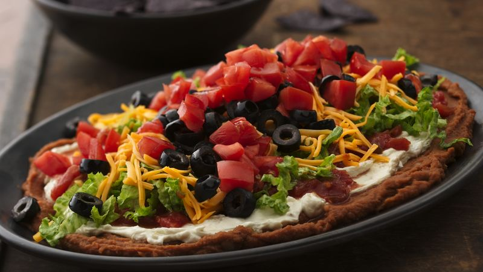

seven layer taco dip

This taco dip is always a big hit at parties and family get-togethers. People gather around the platter until it's gone!
Ingredients
- 1 (450 gm) can refried beans
- 1 (30 gm) package taco seasoning mix
- 1 (450 gm) container sour cream
- 1 (225 gm) package cream cheese, softened
- 1 (450 gm) jar salsa
- 1 large tomato, chopped
- 1 medium green bell pepper, chopped
- 1 bunch chopped green onions
- 1 small head iceberg lettuce, shredded
- 2 cups shredded Cheddar cheese
- 1 (170 gm) can sliced black olives, drained
Directions
- Blend refried beans and taco seasoning in a medium bowl; spread mixture onto a large serving platter.
- Mix sour cream and cream cheese in a medium bowl; spread over refried beans.
- Top with salsa. Layer tomato, bell pepper, green onions, and lettuce over top.
- Sprinkle over Cheddar cheese and garnish with black olives.